BRAND BOOK · FIKTIVNÍ KONCEPT
Hnutí pro lidi, kteří nechtějí jinou ideologii — chtějí, aby lhůty, fronty a formuláře přestaly být národním sportem.
Pozor: ZÍTRA je smyšlené hnutí vytvořené jako ukázka značky a programové práce. Není registrovaným politickým subjektem a nezastupuje ani nenapodobuje žádnou skutečnou stranu, hnutí ani osobu.
Každý pilíř má v programu číslo, termín a zdroj financování.
Písmeno Z a východ slunce v jednom: spodní břevno je zároveň horizont. Nový den postavený na pevné lince.
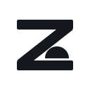
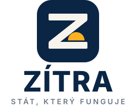
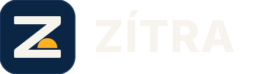
Pravidlo 60 / 30 / 10 — Úsvit je vykřičník, ne výplň. Všechny textové kombinace splňují WCAG AA.
Devět hotových vektorových šablon. Texty jsou živé — dají se přepsat.
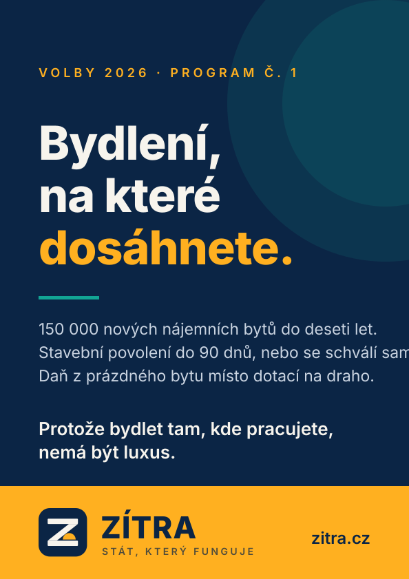
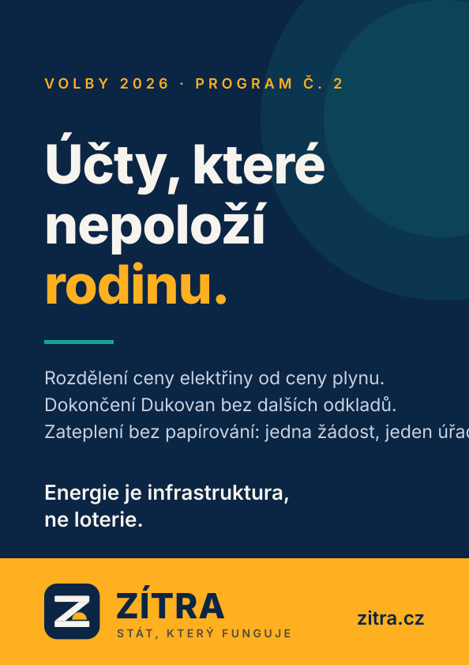
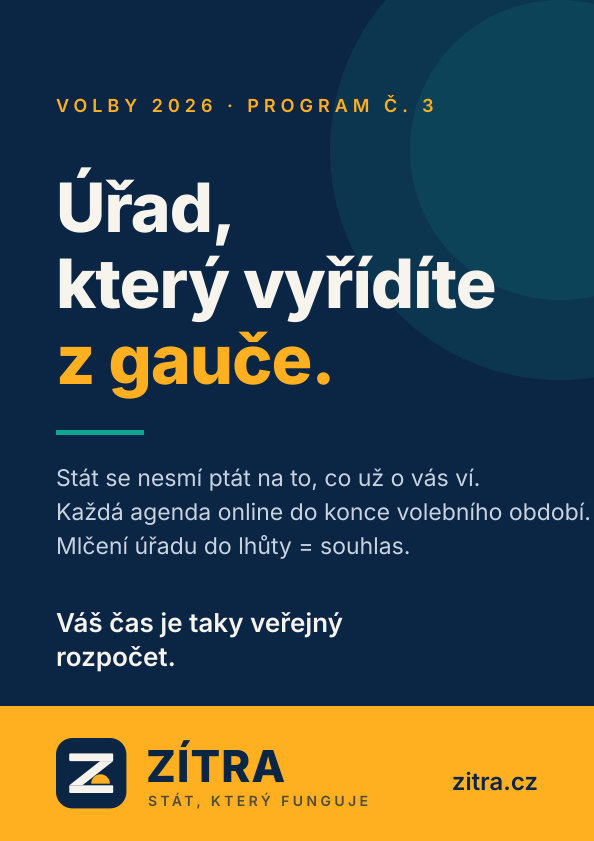
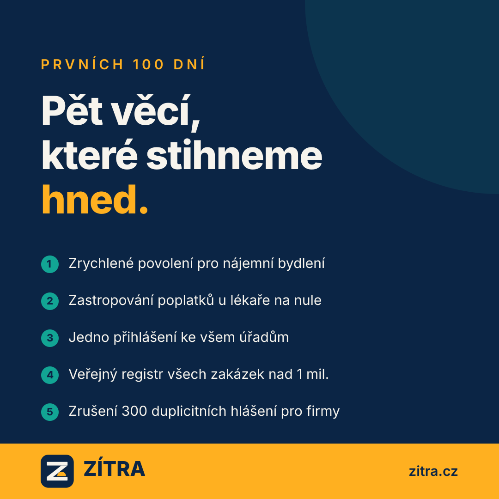
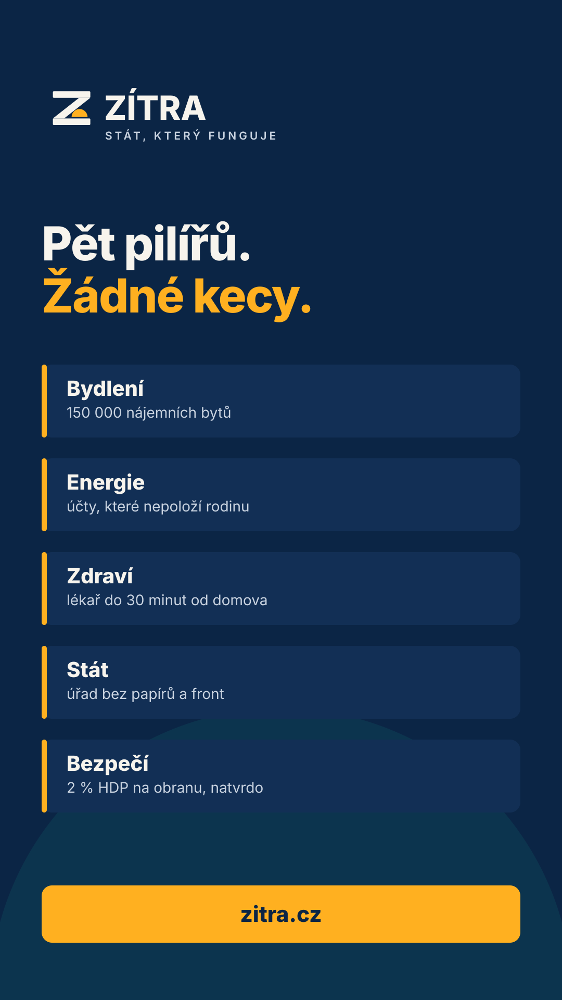
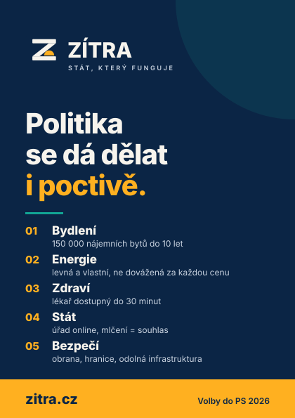
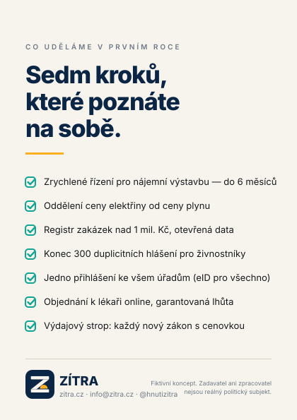
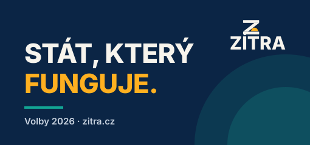
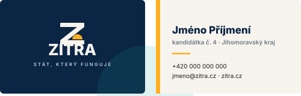
Tabulka, kterou podle konceptu hnutí zveřejňuje a čtvrtletně aktualizuje.
| Ukazatel | Cíl na konci období |
|---|---|
| Medián doby stavebního povolení | do 90 dnů |
| Nové nájemní byty se státní podporou | 60 000 zahájených |
| Agendy státu dostupné plně online | 100 % |
| Počet povinných hlášení pro firmy | −300 |
| Podíl obcí bez praktického lékaře | pod 3 % |
| Výdaje na obranu | 2 % HDP |
| Strukturální saldo rozpočtu | vyrovnané |